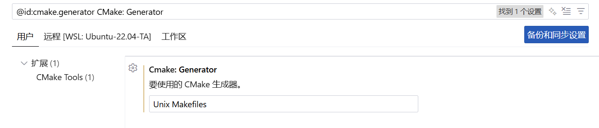

助教代码介绍¶
编译代码¶
打开仓库¶
确保 vscode 打开的文件夹是你的仓库，即
{kind=link}
而不是
{kind=link}
如果是后者，首先在命令行切换到仓库文件夹，然后输入 code . 打开一个新 VSCode 窗口
例如
yang@xxx:~/ta$ cd 2025ustc-jianmu-compiler/
yang@xxx:~/ta/2025ustc-jianmu-compiler$ code .
使用 VSCode CMake¶
首先 Ctrl + Shift + P 调出命令窗口，输入 Cmake: Select a Kit 选择工具包
{kind=link}
然后选择其中的 Clang
{kind=link}
如果你发现只有扫描工具包选项，点击扫描工具包，然后再次 Ctrl + Shift + P 重复输入指令。
当你的 clang 实在无法通过编译或正常调试，可以使用 gcc，后者在与 lldb 协作调试时有一些问题，但不影响实验。
注意可能有多个 gcc 选项，若要进行 linux 调试，路径应该是 /usr/bin/gcc 而非其它路径。
现在可以运行 cmake，我们推荐使用 VSCode CMake 插件进行 CMake，而非命令行调用 cmake ..，你需要
- 删除
build文件夹以刷新缓存 - 点进最外层的
CMakeLists.txt文件，Ctrl + S保存，它会自动配置 cmake
然后你可以在 build 文件夹进行 make。
Q&A
Ctrl + S 没有配置 cmake?
Ctrl + Shift + P输入指令CMake: Configure进行配置
配置之后 make 报错显示没有指定目标?
- 点击 VSCode 左下角设置，进行如下设置

{kind=link}
若你使用命令行运行 cmake，仍然推荐你删除 build 文件夹以刷新缓存，你需要 cmake 命令行日志中注意使用的编译器确实是 clang。
使用 VSCode 进行调试¶
新框架的主要功能是与 CodeLLDB 集成的调试，例如同样断点，旧框架显示
{kind=link}
新框架显示
{kind=link}
为了进行调试，你首先需要创建 launch.json，助教代码中已经创建好，例如
{
"configurations": [
{
"type": "lldb",
"request": "launch",
"name": "Compile & Gen 1.ll",
// 要调试的程序
"program": "${workspaceFolder}/build/cminusfc",
// 命令行参数
"args": [
"-emit-llvm",
"./build/1.cminus",
"-o",
"./build/1.ll"
],
// 程序运行的目录
"cwd": "${workspaceFolder}",
// 程序运行前运行的命令(例如 build)
"preLaunchTask": "make cminusfc",
// codelldb 集成
"initCommands": [
"command script import ${workspaceFolder}/lldb_formatters.py"
]
}
]
}
创建一个名为 Compile & Gen 1.ll 的调试选项，点击 VSCode 左侧调试栏，你可以找到所有你定义的选项
{kind=link}
点击就可以进行调试。
上文这个选项实际运行了程序 ./build/cminusfc -emit-llvm ./build/1.cminus -o ./build/1.ll，
在运行之前，由于设置了 preLaunchTask，还会取 tasks.json 里的对应指令，也就是每次都编译。
如果你某个样例测试不通过，可以找到它对应的 cminus 文件，右键复制相对路径，并更改对应的调试指令来进行调试。
调试信息¶
若你不打断点，调试会很快结束（除非 assert 报错，程序会在 assert 停下来），你可以使用 assert 或者断点来停下来程序，例如下图在行号位置单击打断点。
打断点不一定停下来，特别是在函数返回时，有的编译器会停在 return，有的会停在函数结束的 } 处，你可以多打几个。
{kind=link}
调试界面具有很多信息，右上角漂浮的窗口用于控制目前调试器的行为。这些图标作用分别为：
- 继续，从程序停止处开始执行，直到遇到下一个断点暂停或程序结束
- 逐过程，执行到下一行的位置停止，如果函数返回了就返回然后停住
- 单步调试，和下一步类似，但当你在函数调用上打了断点，"逐过程" 会执行到下一行，但是"单步调试"会进入调用的函数的第一行。
- 单步跳出，执行完当前的函数，然后暂停，当你点击"单步调试"进入函数后，单步跳出会执行完进入的函数并退出
- 重启，重新开始调试。
- 停止，停止调试，同时终止程序。
左侧的侧边栏拥有变量信息，包括
Local栏，具有调试程序暂停的时刻每个局部变量的值，暂停在类的内部还包含this，单步跳出后还包含返回值Static栏，包含暂停到的文件中的全局变量的值，暂停在不同的文件会显示不同的全局变量
下方具有堆栈和断点信息，包括
- 调用堆栈栏
例如下面代码
void a() {
int p = 2;
b();
}
void b() {
int t = 1;
c();
}
void c() {
int val = 0; // 断点停止处
}
停止在断点上后，调用堆栈从屏幕下往上依次是 c, b, a。如果你点击 b，页面就会导航到 b 进入 c 的地方，然后你可以查看局部变量 c 的值。
当程序运行出错，进入一些汇编代码时，调用堆栈告诉你它是如何执行到错误的地方，通过局部变量还可以判断具体是什么错误。
- 断点栏
显示你打了哪些断点，它们在哪里，以及你可以在这里暂时禁用它们。
调试变量¶
变量栏的变量以 名称 + 描述 对出现。
鼠标悬停在名称上，它可以显示变量的类型。鼠标悬停在描述上，它会将描述展开（如果页面太短了看不到描述）。
点击某个变量，你就可以看到它的成员。特别的，如果 class A : B，你展开 A 能看到一个 B，它是 A 中包含的父类信息。
Q&A
调试窗口变量的描述与文档中的图片不同，非常复杂难以阅读?
这可能是由于 lldb 没有正常工作。
在命令行输入 lldb 回车，若显示 ModuleNotFoundError: No module named 'lldb.embedded_interpreter'，可能就是这个问题。这是 lldb 的一个 bug，原因是 llvm 需要使用它自带的 python 文件，但是它设置错了自己的默认 python 路径。
输入 exit 退出刚才的环境，输入 lldb -P，会显示 llvm 默认 python 路径，例如 /usr/lib/local/lib/python3.10/dist-packages。这个 python 路径也许不存在，你需要创建 /usr/lib/local/lib/python3.10 文件夹。
然后你需要寻找 llvm 自带的 python，它一般在 /usr/lib/llvm-14/lib/python3.10/dist-packages，然后将它链接到 llvm 默认路径，这里即 sudo ln -s /usr/lib/llvm-14/lib/python3.10/dist-packages /usr/lib/local/lib/python3.10/dist-packages。
不同的机器可能具有不同的路径。
当程序陷入异常后通过调用堆栈导航到外面，发现调试窗口难以阅读
这是正常的，异常之前打个断点提前停下来就不会这样。
框架更新介绍¶
此处介绍助教代码相对原有框架进行的所有更新
去除 llvm ilist 依赖¶
所有的 llvm::ilist<Instruction> 都换成了 std::list<Instruction*>，并且对 llvm 的依赖从 cmake 中去除。
原有的 llvm::ilist 无法被 lldb 正确识别。导致调试时无法看到一个函数有哪些基本块，一个基本块有哪些指令；
{kind=link}
使用 std::list 虽然性能受损，但是可以在调试时看到所有的基本块和指令。
{kind=link}
代价是有些地方 BasicBlock，Instruction 变成了它们的指针，如果你要复用原来你自己写的代码，你需要改改。
使用两段化 Instruction List¶
每个基本块中的指令列表被分为两段
block_label:
--------------------
alloca / phi segment
--------------------
other inst segment
--------------------
调用 add_inst 等 api 插入指令时，alloca 和 phi 指令会被插入第一段，而其它指令会被插入第二段，插入顺序和 api 的描述一致。创建指令也是如此。
因此，你可以在一个已经终止的块中创建 phi 和 allca。
特别的，IRBuilder 中的 create_alloca 会将 alloca 指令放置在函数的入口块
AllocaInst *create_alloca(Type *ty, const std::string& name = "") const
{
return AllocaInst::create_alloca(ty, this->BB_->get_entry_block_of_same_function(), name);
}
这么做的一个原因是与 llvm 兼容。你可能已经注意到栈式分配给每个 alloca 都分配且仅分配一个位置，但是 llvm lli 却在执行时每次遇到 alloca 都分配一次空间，
这导致循环中的 alloca 内存泄漏，lli 报错
while(1)
{
int a;
}
识别 alloca 是否在循环中，然后将它提到循环外是多此一举。无论栈式还是寄存器分配，alloca 指令的位置都不影响最终的汇编性能，
所以我们可以简单的全放到函数入口块指令列表的第一段，入口块不可能有前驱基本块，因此不可能位于循环中。
phi 指令具有不同的考量，当你发现你需要插入一个 phi，通常是选择语句对一个变量进行了不同的赋值
if(xxx)
a = 0;
else
a = 1;
b = a;
然后你需要将它转换为 SSA
if(xxx)
a = 0;
else
a1 = 1;
a2 = phi(a, a1);
b = a2;
a2 放在哪里？它需要放在所有本基本块使用到 a 的变量的前面，不过最省事的做法是直接丢到基本块开头，也就是指令列表第一段。
phi 的操作数来自于前驱基本块，由于入口块不可能有前驱块，入口块不存在 phi，这样，可以认为入口块第一段只有 alloca，而非入口块第一段只有 phi。
段的区分在接口中没有明显体现，当你遍历指令列表，你还是会遍历所有指令，只不过 alloca 和 phi 都在指令列表开头的地方。
去除 Instruction 类的 CRTP¶
将
template <typename Inst> class BaseInst : public Instruction {
protected:
template <typename... Args> static Inst *create(Args &&...args) {
return new Inst(std::forward<Args>(args)...);
}
template <typename... Args>
BaseInst(Args &&...args) : Instruction(std::forward<Args>(args)...) {}
};
class IBinaryInst : public BaseInst<IBinaryInst> {
friend BaseInst<IBinaryInst>;
private:
IBinaryInst(OpID id, Value *v1, Value *v2, BasicBlock *bb);
public:
static IBinaryInst *create_add(Value *v1, Value *v2, BasicBlock *bb);
static IBinaryInst *create_sub(Value *v1, Value *v2, BasicBlock *bb);
static IBinaryInst *create_mul(Value *v1, Value *v2, BasicBlock *bb);
static IBinaryInst *create_sdiv(Value *v1, Value *v2, BasicBlock *bb);
virtual std::string print() override;
};
变为
class IBinaryInst : public Instruction {
private:
IBinaryInst(OpID id, Value *v1, Value *v2, BasicBlock *bb, const std::string& name);
public:
static IBinaryInst *create_add(Value *v1, Value *v2, BasicBlock *bb, const std::string& name = "");
static IBinaryInst *create_sub(Value *v1, Value *v2, BasicBlock *bb, const std::string& name = "");
static IBinaryInst *create_mul(Value *v1, Value *v2, BasicBlock *bb, const std::string& name = "");
static IBinaryInst *create_sdiv(Value *v1, Value *v2, BasicBlock *bb, const std::string& name = "");
std::string print() override;
};
原来的那个实现虽然性能更好，但它会导致报错时点击报错函数导航到 BaseInst 这个空模板，影响 debug。
创建时命名¶
实现了一个名称分配器类 Names。当创建基本块和非 void 指令时，即使你不指定名称，它也会给它们立刻分配一个名称。
Names 会确保分配的名字不重复，目前助教代码中所有 alloca 指令指定的名字都是 cminus 中变量的名字。
以前基本块和指令的名称直到调用 print 时才分配，在这之前一直是空的。当你想要打断点调试时，你会发现你分不清不同指令和基本块。
LLDB Summary¶
每个类都有自定义的 lldb summary，也就是
{kind=link}
如果不实现这个你会看到
{kind=link}
如果你发现你的 summary 是 parse summary error 类似的话，你可以尝试更新 clang 或者搜索它如何修复，或者换用 gcc。但是 gcc 有一个 bug，导致有些 summary 不能正确显示。例如指令列表：
{kind=link}
对 CMAKE 的更改专门用于处理这些情况
include(CheckCXXCompilerFlag)
if(CMAKE_CXX_COMPILER_ID MATCHES "Clang")
check_cxx_compiler_flag("-fstandalone-debug" CXX_SUPPORTS_STANDALONE_DEBUG)
if(CXX_SUPPORTS_STANDALONE_DEBUG)
message(STATUS "Adding -fstandalone-debug for Clang")
set(CMAKE_CXX_FLAGS_DEBUG "${CMAKE_CXX_FLAGS_DEBUG} -fstandalone-debug")
else()
message(STATUS "Clang does not support -fstandalone-debug, skipping")
endif()
else()
message(STATUS "Use Gcc")
endif()
如果编译器是 clang 就尝试添加 -fstandalone-debug 修复 parse summary error 的 bug，
我们确实发现一些同学的环境不支持这个 flag，所以这里进行检测，只在支持时开启它。
当你实现一个新的类，你会发现它没有描述，你可以添加它，这包括
- 在你的类中实现
std::string safe_print() const方法 - 在
lldb_formatters.py中具有很多类名的列表中添加你的类名
你也可以在其它 CMAKE 项目中开启这个功能，这包括
- 在 launch 中添加
"initCommands": [ "command script import ${workspaceFolder}/lldb_formatters.py" ] - 复制
lldb_formatters.py到项目根目录，列表中只保留你需要的类名 - 实现
safe_print方法
当然你可能需要处理 gcc/clang 与 lldb 不兼容的问题，就像上文提的一样。